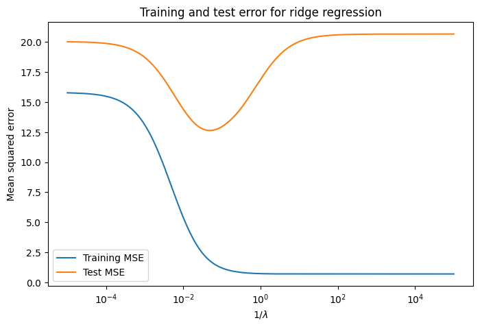
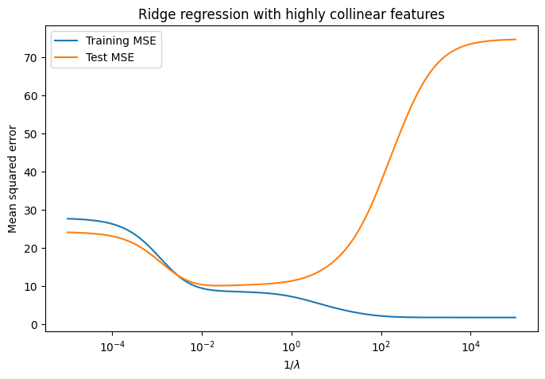
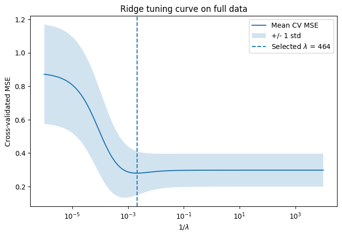
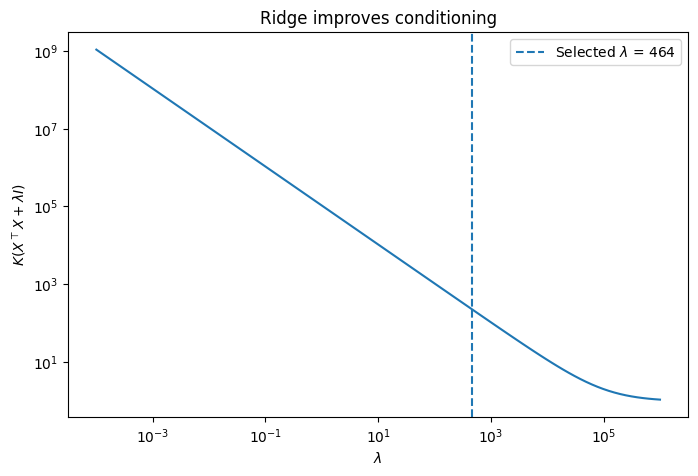
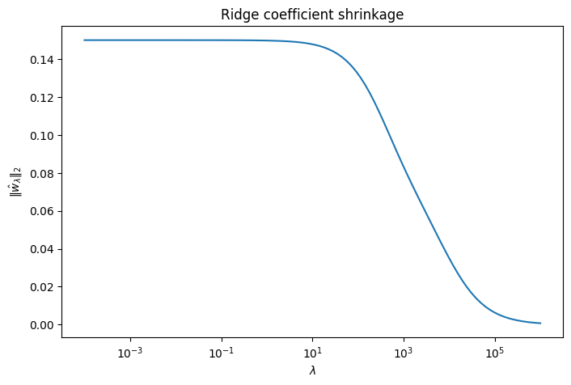
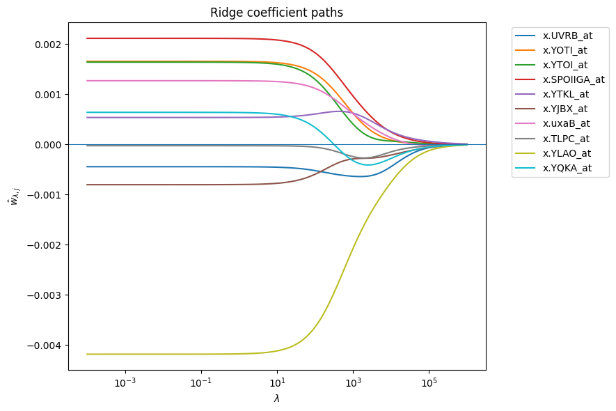

Show code
import numpy as np
import matplotlib.pyplot as plt
from ipywidgets import interact, FloatSlider, Dropdown
from matplotlib.patches import CircleLet’s revisit linear regression in light of what we now understand about complexity and tuning. We use the same notation as in earlier lectures:
We use the squared error loss \(\ell(y, s_w(x)) = (y - s_w(x))^2\), which gives the empirical risk:
\[ \hat{R}(s)= \frac{1}{N} \sum_{n=1}^N (y_n - s_w(x_n))^2= \frac{1}{N} \sum_{n=1}^N (y_n - x_n^\top w)^2= \frac{1}{N} \|y - Xw\|_2^2= \hat{R}(w) \]
Finding the ERM estimator
\[ \hat{s}= \arg\min_{s \in \mathcal{S}} \hat{R}(s) \]
amounts to solving
\[ \hat{w}= \arg\min_w \hat{R}(w). \]
We call this the ordinary least squares (OLS) estimator.
Based on what we have already seen, minimizing training error alone is not sufficient.
From earlier examples:
The core issue with using ERM alone is that it focuses only on fit to the training data, without controlling model complexity.
So far, we have addressed this in two steps: - First, we estimate generalization performance using validation or cross-validation - Then, we use this to choose model complexity (e.g., polynomial degree, number of neighbors in kNN)
We have also implicitly controlled complexity by restricting the class of functions we consider (e.g., limiting polynomial degree or the range of \(k\) in kNN).
These are all examples of controlling model capacity to improve generalization. A general term for this idea is regularization.
Broadly, regularization means modifying the learning problem to control model complexity and improve stability/generalization. It is a broad concept, not a single technique.
Examples of regularization include:
We now study how to modify the optimization problem itself by introducing a complexity penalty.
Recall that the ERM problem can be written as
\[ \hat{s} = \arg\min_{s \in \mathcal{S}} \hat{R}(s). \]
One source of overfitting is that the hypothesis class \(\mathcal{S}\) may contain very complex functions. To address this, we can modify the objective to penalize complex models directly.
Let \(\Omega(s)\) be a measure of the complexity of \(s\). We define the penalized ERM problem as
\[ \hat{s}= \arg\min_{s \in \mathcal{S}} \hat{R}(s) + \lambda \, \Omega(s), \]
where \(\lambda \ge 0\) controls the strength of regularization.
In many cases, the model class is parameterized by a vector \(w\), so that each \(s \in \mathcal{S}\) can be written as \(s = s_w\).
In this setting, we can rewrite the problem entirely in terms of \(w\):
\[ \hat{w}= \arg\min_w \hat{R}(w) + \lambda \, \Omega(w). \]
This was the case for linear regression and logistic regression.
Perhaps the simplest example of penalized ERM is ridge regression. This modifies the original OLS problem by penalizing the loss with a complexity measure on \(s_w\):
\[ \Omega(s_w) = \|w\|_2^2. \]
This leads to a new problem of finding:
\[ \hat{w}^{\lambda}_{ridge}= \arg\min_w \frac{1}{N}\|y - Xw\|_2^2 + \lambda \|w\|_2^2 \]
Here \(\|\cdot\|_2\) denotes the \(\ell_2\) (or \(L_2\)) norm, defined for \(w \in \mathbb{R}^D\) by
\[ \|w\|_2 = \left( \sum_{j=1}^D w_j^2 \right)^{1/2}. \]
Overall, this is same loss as OLS plus a \(L_2\) penalty. This penalty will have the effect of shrinking coefficient estimate \(\hat{w}\) towards zero. (In practice, we’ll typically also (1) do not penalize the intercept term, and (2) standardize the features beforehand).
With \(\lambda = 0\) we get back OLS, while \(\lambda \to \infty\) drives \(w \to 0\).
Why is \(\Omega\) reasonable?
Large coefficients correspond to more flexible fits.
If the entries of \(w\) are large, the model can change rapidly with small changes in \(x\). This somehow captures flexibility. Conversely, small coefficients give smoother, more stable models. It limits how strongly any single feature can influence the prediction.
Handles multicollinearity.
When features are highly correlated, we’ll show that OLS can often produce large coefficients that cancel each other out. Penalizing \(\|w\|_2^2\) discourages this behavior and leads to more stable solutions.
It’s Mathematically convenient.
The squared \(\ell_2\) norm is smooth and leads to a closed-form solution, which makes ridge regression easy to analyze and compute.
How do we solve this now? The idea is exactly the same as before: take the gradient and set it equal to zero. The only difference is that we now have an additional penalty term.
Our objective is: \[ \hat{R}(w) = \|y - Xw\|_2^2 + \lambda \|w\|_2^2. \]
First, let’s expand it out: \[ \hat{R}(w) = \|y - Xw\|_2^2 + \lambda \|w\|_2^2= (y - Xw)^\top (y - Xw) + \lambda w^\top w \]
Expanding the first term: \[= y^\top y - 2 w^\top X^\top y + w^\top X^\top X w + \lambda w^\top w. \]
Now we compute the gradient with respect to \(w\). Using the same rules as before:
Let’s add one additional rule:
Putting this together: \[ \nabla_w \hat{R}(w) = 2 X^\top X w - 2 X^\top y + 2 \lambda w. \]
To find the minimizer, set the gradient equal to zero: \[ 2 X^\top X w - 2 X^\top y + 2 \lambda w = 0. \]
Dividing by 2: \[ X^\top X w - X^\top y + \lambda w = 0. \]
Rearranging: \[ (X^\top X + \lambda I) w = X^\top y. \]
These are what one might call the ridge normal equations.
For OLS we had to worry about whether the matrix \(X^\top X\) was invertible. However, for ridge, if \(\lambda > 0\), the matrix \((X^\top X + \lambda I)\) is always invertible, so we can solve directly: \[ \hat{w}^{\lambda}_{ridge} = (X^\top X + \lambda I)^{-1} X^\top y. \]
Compare this to the OLS solution:
Adding \(\lambda I\) - ensures invertibility even when \(D > N\)
- stabilizes the solution when features are correlated
Often we say this is better conditioned.
It may help to look at the eigenvalues of the matrix \(X^\top X\). An important fact about \(X^\top X\): it is symmetric and positive semidefinite. For our purposes, this is important because it means it has real eigenvalues \(\sigma_1^2, \dots, \sigma_D^2 \ge 0\) associated with orthogonal eigenvectors \(v_1,\ldots,v_D\) so that
\[ X^\top X v_i = \sigma_i^2 v_i. \]
(We’ll show this later in the course, and give some intuition for why we use \(\sigma_i^2\) as the notation.) The issue with OLS is that some of these eigenvalues can be zero. This happens when features are linearly dependent, e.g., when \(D > N\). Basic facts of linear algebra are that a square matrix is invertible iff none of the eigenvalues are zero.
Now consider the ridge matrix: \[ X^\top X + \lambda I. \]
A key fact is that adding \(\lambda I\) shifts every eigenvalue by \(\lambda\). To see why, suppose \(v\) is an eigenvector of \(X^\top X\) with eigenvalue \(\sigma^2\), so \[ X^\top X \, v = \sigma^2 v. \]
Now consider the new matrix: \[ (X^\top X + \lambda I) v= X^\top X \, v + \lambda I v= \sigma^2 v + \lambda v= (\sigma^2 + \lambda) v. \]
So \(v\) is still an eigenvector, and its eigenvalue has increased from \(\sigma^2\) to \(\sigma^2 + \lambda\).
Consequently, in ridge the eigenvalues become: \[ \sigma_1^2 + \lambda, \dots, \sigma_D^2 + \lambda. \]
If \(\lambda > 0\), each of these is strictly positive: \[ \sigma_j^2 + \lambda > 0 \quad \text{for all } j. \]
This means there are no zero eigenvalues and so the matrix is invertible. You can think of \(X^\top X\) as having some “flat” directions (where the eigenvalue is 0 or close to it), meaning the data does not constrain the solution in those directions. Adding \(\lambda I\) removes these flat directions by adding curvature everywhere, making the problem well-posed.
Another way to understand why ridge helps is through conditioning.
The stability of solving a linear system like \[ X^\top X w = X^\top y \] depends on how “well-conditioned” the matrix \(X^\top X\) is. The traditional way to measure this is the condition number.
The condition number of a matrix \(A\) is defined as \[ K(A) = \frac{\lambda_{\max}(A)}{\lambda_{\min}(A)}, \] where \(\lambda_{\max}\) and \(\lambda_{\min}\) are the largest and smallest eigenvalues of \(A\).
In particular:
OLS depends on \(K(X^\top X)\). If \(X^\top X\) has very small eigenvalues (due to multicollinearity like \(D > N\)), then the condition number is large and the solution is unstable.
Ridge replaces \(X^\top X\) with \[ X^\top X + \lambda I. \]
As we saw, this shifts all eigenvalues: \[ \sigma^2_i \;\to\; \sigma^2_i + \lambda. \]
So the condition number becomes \[ K(X^\top X + \lambda I)= \frac{\lambda_{\max} + \lambda}{\lambda_{\min} + \lambda}. \]
Since we are increasing the smallest eigenvalue, this ratio becomes smaller. This means better conditioning and more stable solutions. In the extreme if \(\lambda_{\min}=0\) then
\[ K(X^\top X + \lambda I)= 1 + \lambda_{\max}/\lambda \]
So far we have written ridge regression in penalized form: \[ \hat{w}= \arg\min_w \hat{R}(w) + \lambda \|w\|_2^2. \]
There is an equivalent way to view this problem, called the constrained form: \[ \min_w \hat{R}(w) \quad \text{s.t.} \quad \|w\|_2^2 \le t. \]
In the penalized form we trade off fit and complexity directly in the objective, \(\lambda\) controls how much we penalize large coefficients. In the constrained form we minimize training error subject to a hard constraint on complexity. Here \(t\) sets the maximum allowed size of \(w\). These are mathematically equivalent.
For every value of \(\lambda\), there exists a value of \(t\) such that the two problems have the same solution (and vice versa). So we can think of \(\lambda\) and \(t\) as two ways of parameterizing the same tradeoff.
The connection between the two formulations comes from the theory of constrained optimization. You may have seen a simplified version of this in a multivariable calculus course under the name Lagrange multipliers. For more information, see: KKT Conditions.
import numpy as np
import matplotlib.pyplot as plt
from ipywidgets import interact, FloatSlider, Dropdown
from matplotlib.patches import Circleimport numpy as np
X = np.array([
[1.0, 0.0],
[0.0, 1.0],
[1.0, 1.0],
[2.0, 1.0]
])
y = np.array([1.0, 1.0, 2.0, 2.5])
w_ols = np.linalg.solve(X.T @ X, X.T @ y)
w_olsarray([0.83333333, 1. ])def risk(w1, w2):
#vectorized
pred = X[:, 0, None, None] * w1 + X[:, 1, None, None] * w2
residuals = y[:, None, None] - pred
return np.mean(residuals**2, axis=0)
def penalized_risk(w1, w2, lam):
#vectorized
return risk(w1, w2) + lam * (w1**2 + w2**2)
def ridge_solution(lam):
return np.linalg.solve(X.T @ X + lam * np.eye(2), X.T @ y)
def constrained_solution(t):
# approximate mapping correpsondence for lambda given t
# if it sats constr, lambda=0 (OLS)
ols_norm_sq = np.dot(w_ols, w_ols)
if ols_norm_sq <= t:
return w_ols, 0.0
# map of lambda to ridge to constr value t
def norm_sq_at_lambda(lam):
w = ridge_solution(lam)
return np.dot(w, w)
# quick and dirty approx
lo, hi = 0.0, 1.0
while norm_sq_at_lambda(hi) > t:
hi *= 2.0
#lam somewhere between low and high at this point
# approx binary search for lam-star sat constr exactly
for _ in range(80):
mid = 0.5 * (lo + hi)
if norm_sq_at_lambda(mid) > t:
lo = mid
else:
hi = mid
lam_star = 0.5 * (lo + hi)
w_star = ridge_solution(lam_star)
return w_star, lam_star #<- this is what its trying to get given t what is value of lambda
def plot_geometry(mode="constrained", t=1.0, lam=0.5):
xlim = (-2.5, 2.5)
ylim = (-2.5, 2.5)
fig, ax = plt.subplots(figsize=(7, 7))
# grid of ws
w1 = np.linspace(xlim[0], xlim[1], 400)
w2 = np.linspace(ylim[0], ylim[1], 400)
W1, W2 = np.meshgrid(w1, w2)
# OLS risk
Z = risk(W1, W2)
levels = np.linspace(np.min(Z) + 0.2, np.min(Z) + 8.0, 12)
ax.contour(W1, W2, Z, levels=levels, linewidths=1.2)
if mode == "constrained":
# add constr circle
radius = np.sqrt(t)
circle = Circle((0, 0), radius, fill=False, linestyle='--', linewidth=2)
ax.add_patch(circle)
# find lambda corresp to constr value t
w_con, lam_star = constrained_solution(t)
ax.plot(w_con[0], w_con[1], 'o', markersize=8, label='Constrained solution')
ax.plot([0, w_con[0]], [0, w_con[1]], linewidth=1)
title = (
r'Constrained form: $\min_w \hat R(w)$ s.t. $\|w\|_2^2 \leq t$'
+ "\n"
+ rf'$t = {t:.2f}$, implied $\lambda^* \approx {lam_star:.3f}$'
)
elif mode == "penalized":
# draw pen risk contours
Zp = penalized_risk(W1, W2, lam)
levels_p = np.linspace(np.min(Zp) + 0.05, np.min(Zp) + 5.0, 10)
ax.contour(W1, W2, Zp, levels=levels_p, linestyles='dashed', linewidths=1.0, colors='red')
# add ridge soln
w_ridge = ridge_solution(lam)
ax.plot(w_ridge[0], w_ridge[1], 'o', markersize=8, label='Penalized solution')
radius = np.linalg.norm(w_ridge)
circle = Circle((0, 0), radius, fill=False, linestyle='--', linewidth=2)
ax.add_patch(circle)
title = (
r'Penalized form: $\min_w \hat R(w) + \lambda \|w\|_2^2$'
+ "\n"
+ rf'$\lambda = {lam:.2f}$, implied $t \approx \|w_\lambda\|_2^2 = {radius**2:.3f}$'
)
else:
raise ValueError("mode must be 'constrained' or 'penalized'")
ax.plot(w_ols[0], w_ols[1], '*', markersize=8, label='OLS solution')
ax.axhline(0, linewidth=0.8)
ax.axvline(0, linewidth=0.8)
ax.set_xlim(*xlim)
ax.set_ylim(*ylim)
ax.set_aspect('equal', adjustable='box')
ax.set_xlabel(r'$w_1$')
ax.set_ylabel(r'$w_2$')
ax.set_title(title)
ax.legend()
plt.show()interact(
plot_geometry,
mode=Dropdown(
options=["constrained", "penalized"],
value="constrained",
description="view"
),
t=FloatSlider(
value=1.0, min=0.05, max=6.0, step=0.05,
description='t'
),
lam=FloatSlider(
value=0.5, min=0.0, max=50.0, step=0.05,
description='lambda'
)
);Notice that OLS has elliptical loss contours, the ridge: solution given by the intersection of these contours with an \(L_2\) ball.
From the plot, we can see that OLS chooses the center of the smallest ellipse, without any constraint on the size of \(w\). In contrast, ridge restricts us to lie inside a ball \(\|w\|_2^2 \le t\), and selects the point where the smallest ellipse first touches this region.
As we tighten the constraint (decrease \(t\) or increase \(\lambda\)), the solution moves continuously toward the origin. The solution balances minimizing the loss (moving toward the center of the ellipses) with keeping \(\|w\|_2\) small (staying inside the ball). The shape of the ball and the ellipses determines the solution. Because the \(L_2\) ball is round, the solution tends to shrink all coordinates.
Ridge regression provides a direct way to control the bias-variance tradeoff through the parameter \(\lambda\).
This leads to the familiar U-shaped test error curve. We can choose \(\lambda\) via cross-validation.
First consider a simulation with high variance and many useless variables:
from sklearn.model_selection import train_test_split
from sklearn.linear_model import Ridge
from sklearn.metrics import mean_squared_errornp.random.seed(1)
N = 100
D = 50
X = np.random.normal(size=(N, D))
# True signal uses only a few features
w_true = np.zeros(D)
w_true[:5] = [3, -2, 1.5, 0.5, -1]
# relatively high noise
noise = np.random.normal(scale=2.0, size=N)
y = X @ w_true + noise# Train/test split
X_train, X_test, y_train, y_test = train_test_split(
X, y, test_size=0.4, random_state=1
)lambdas = np.logspace(-5, 5, 250)
train_mse = []
test_mse = []
for lam in lambdas:
model = Ridge(alpha=lam, fit_intercept=False)
model.fit(X_train, y_train)
yhat_train = model.predict(X_train)
yhat_test = model.predict(X_test)
train_mse.append(mean_squared_error(y_train, yhat_train))
test_mse.append(mean_squared_error(y_test, yhat_test))plt.figure(figsize=(8, 5))
plt.plot(1/lambdas, train_mse, label="Training MSE")
plt.plot(1/lambdas, test_mse, label="Test MSE")
plt.xscale("log")
plt.xlabel(r"$1/\lambda$")
plt.ylabel("Mean squared error")
plt.title("Training and test error for ridge regression")
plt.legend()
plt.show()
Now consider a simulation with high colinearity:
# Simulate highly collinear data
N = 100
groups = 10
copies_per_group = 5
D = groups * copies_per_group
Z = np.random.normal(size=(N, groups))
X = np.hstack([
Z[:, [j]] + 0.05 * np.random.normal(size=(N, copies_per_group))
for j in range(groups)
])
w_true = np.zeros(D)
for j in range(groups):
w_true[j * copies_per_group] = 1.0
y = X @ w_true + np.random.normal(scale=3.0, size=N)# Train/test split
X_train, X_test, y_train, y_test = train_test_split(
X, y, test_size=0.4, random_state=1
)
lambdas = np.logspace(-5, 5, 250)
train_mse = []
test_mse = []
coef_norms = []
for lam in lambdas:
model = Ridge(alpha=lam, fit_intercept=False)
model.fit(X_train, y_train)
train_mse.append(mean_squared_error(y_train, model.predict(X_train)))
test_mse.append(mean_squared_error(y_test, model.predict(X_test)))
coef_norms.append(np.linalg.norm(model.coef_))plt.figure(figsize=(8, 5))
plt.plot(1/lambdas, train_mse, label="Training MSE")
plt.plot(1/lambdas, test_mse, label="Test MSE")
plt.xscale("log")
plt.xlabel(r"$1/\lambda$")
plt.ylabel("Mean squared error")
plt.title("Ridge regression with highly collinear features")
plt.legend()
plt.show()
When applying ridge regression in practice, there are a few important implementation details.
Standardize predictors
Ridge penalizes the size of the coefficients: \[ \lambda \|w\|_2^2 = \lambda \sum_j w_j^2. \]
If predictors are on different scales, this penalty is not applied fairly:
So without standardization:
Typically, we:
This ensures the penalty treats all predictors comparably.
We also typically do not penalize the intercept. The intercept represents the baseline level of the response and does not reflect model complexity.
If we penalize it:
So in practice we exclude the intercept from the penalty. Equivalently, we center the data so that the intercept is handled separately.
Mathematically, we can write the model with an explicit intercept: \[ y = \alpha + Xw. \]
Ridge regression then solves: \[ \min_{\alpha, w} \;\frac{1}{N}\|y - \alpha \mathbf{1} - Xw\|_2^2 + \lambda \|w\|_2^2, \] where the intercept \(\alpha\) is not penalized.
If we center the data: \[ \tilde{y} = y - \bar{y}, \quad \tilde{X} = X - \mathbf{1}\bar{x}^\top, \] then the optimal intercept becomes \[ \hat{\alpha} = \bar{y}, \] and the problem reduces to: \[ \min_w \;\frac{1}{N}\|\tilde{y} - \tilde{X}w\|_2^2 + \lambda \|w\|_2^2. \]
So centering the data effectively separates out the intercept, allowing us to penalize only \(w\).
Suppose the columns of \(X\) are orthonormal, so that \[ X^\top X = I. \]
The ridge estimator is: \[ \hat{w}_\lambda = (X^\top X + \lambda I)^{-1} X^\top y. \]
Using \(X^\top X = I\), this simplifies to: \[ \hat{w}_\lambda = (I + \lambda I)^{-1} X^\top y = \frac{1}{1+\lambda} X^\top y. \]
Since the OLS estimator is \[ \hat{w}_{\text{OLS}} = X^\top y, \] we get: \[ \hat{w}_\lambda = \frac{1}{1+\lambda} \hat{w}_{\text{OLS}}. \]
So ridge simply rescales all coefficients by the same factor. The shrinkage factor is: \[ \frac{1}{1+\lambda} \in (0,1) \]
As \(\lambda \to 0\), \(\hat{w}_\lambda \to \hat{w}_{\text{OLS}}\). As \(\lambda \to \infty\), \(\hat{w}_\lambda \to 0\). This formulation remains valid even when the OLS solution does not exist (e.g., when \(X^\top X\) is not invertible). For any \(\lambda > 0\), the ridge solution is well-defined. Moreover, as \(\lambda \to 0\), the ridge estimator approaches the OLS solution when it exists, and more generally converges to a limiting solution often referred to as ridgeless regression. This is what sklearn defaults to in the case of linear regression when the design matrix has co-linear columns.
import numpy as np
import pandas as pd
import matplotlib.pyplot as plt
from sklearn.pipeline import make_pipeline
from sklearn.preprocessing import StandardScaler
from sklearn.linear_model import Ridge
from sklearn.model_selection import KFold, GridSearchCV, cross_val_score
from sklearn.metrics import mean_squared_errorriboflavin_df = pd.read_csv('riboflavin.csv')riboflavin_df.head()| y | x.AADK_at | x.AAPA_at | x.ABFA_at | x.ABH_at | x.ABNA_at | x.ABRB_at | x.ACCA_at | x.ACCB_at | x.ACCC_at | ... | x.YYDF_i_at | x.YYDG_at | x.YYDH_at | x.YYDI_at | x.YYDJ_at | x.YYDK_at | x.YYXA_at | x.YYZB_at | x.YYZE_at | x.zur_at | |
|---|---|---|---|---|---|---|---|---|---|---|---|---|---|---|---|---|---|---|---|---|---|
| 0 | -6.643856 | 8.492404 | 8.111451 | 8.320842 | 10.287112 | 8.261279 | 10.208273 | 9.745474 | 9.818821 | 9.676227 | ... | 7.882737 | 5.440163 | 4.981684 | 6.481998 | 5.363919 | 7.773494 | 7.668711 | 3.762119 | 7.172823 | 7.427105 |
| 1 | -6.947862 | 7.639380 | 7.239965 | 7.289051 | 9.862287 | 7.303497 | 9.500023 | 9.216008 | 9.854946 | 9.650078 | ... | 7.912135 | 5.383739 | 4.597438 | 6.390127 | 4.763876 | 7.336261 | 7.600104 | 3.761616 | 7.187113 | 7.545287 |
| 2 | -7.930160 | 8.088340 | 7.855510 | 7.793395 | 9.676720 | 7.098273 | 9.473917 | 9.580384 | 9.926077 | 9.787129 | ... | 7.354618 | 5.718795 | 4.468228 | 6.123498 | 5.400686 | 7.573388 | 7.873352 | 3.741953 | 7.251285 | 7.718321 |
| 3 | -8.287712 | 7.886820 | 7.939513 | 7.997588 | 9.680562 | 7.408494 | 9.788725 | 9.447722 | 9.852773 | 9.546915 | ... | 7.691985 | 5.561048 | 4.787030 | 5.904708 | 5.139692 | 7.214269 | 7.384115 | 3.887179 | 7.117375 | 7.260654 |
| 4 | -7.310432 | 6.805762 | 7.554522 | 7.609902 | 8.551953 | 7.712407 | 8.490847 | 8.696249 | 8.573272 | 8.589661 | ... | 7.999088 | 5.549914 | 5.258139 | 6.206778 | 4.910169 | 6.884474 | 6.996956 | 4.034177 | 7.722534 | 6.828164 |
5 rows × 4089 columns
# Response is the first column, predictors are all remaining columns
y = riboflavin_df["y"].to_numpy(dtype=float)
X_raw = riboflavin_df.drop(columns=["y"])
# Keep feature names
feature_names = np.array(X_raw.columns)
# Convert predictors to numpy array
X = X_raw.to_numpy(dtype=float)
print("X shape:", X.shape)
print("y shape:", y.shape)X shape: (71, 4088)
y shape: (71,)lambdas = np.logspace(-4, 6, 100)
outer_cv = KFold(n_splits=5, shuffle=True, random_state=164654)
inner_cv = KFold(n_splits=5, shuffle=True, random_state=56882)
ridge_pipeline = make_pipeline(
StandardScaler(),
Ridge(fit_intercept=True, solver="svd")
)
param_grid = {
"ridge__alpha": lambdas
}outer_test_mse = []
outer_best_lambdas = []
outer_coef_norms = []
for fold, (train_idx, test_idx) in enumerate(outer_cv.split(X), start=1):
X_train, X_test = X[train_idx], X[test_idx]
y_train, y_test = y[train_idx], y[test_idx]
# Inner CV chooses lambda using only the outer training fold
search = GridSearchCV(
estimator=ridge_pipeline,
param_grid=param_grid,
scoring="neg_mean_squared_error",
cv=inner_cv,
refit=True
)
search.fit(X_train, y_train)
best_model = search.best_estimator_
best_lambda = search.best_params_["ridge__alpha"]
# Evaluate once on the outer test fold
y_pred = best_model.predict(X_test)
test_mse = mean_squared_error(y_test, y_pred)
coef = best_model.named_steps["ridge"].coef_
outer_test_mse.append(test_mse)
outer_best_lambdas.append(best_lambda)
outer_coef_norms.append(np.linalg.norm(coef))
print(f"Fold {fold}")
print(f" best lambda: {best_lambda:.4g}")
print(f" outer test MSE: {test_mse:.4f}")
print(f" coefficient norm: {np.linalg.norm(coef):.4f}")Fold 1
best lambda: 367.8
outer test MSE: 0.3211
coefficient norm: 0.0938
Fold 2
best lambda: 367.8
outer test MSE: 0.3577
coefficient norm: 0.0954
Fold 3
best lambda: 91.12
outer test MSE: 0.3303
coefficient norm: 0.1173
Fold 4
best lambda: 464.2
outer test MSE: 0.1479
coefficient norm: 0.0968
Fold 5
best lambda: 145.1
outer test MSE: 0.1427
coefficient norm: 0.1213outer_test_mse = np.array(outer_test_mse)
outer_best_lambdas = np.array(outer_best_lambdas)
outer_coef_norms = np.array(outer_coef_norms)
print("Nested CV results")
print("-----------------")
print(f"Mean outer test MSE: {outer_test_mse.mean():.4f}")
print(f"Std outer test MSE: {outer_test_mse.std(ddof=1):.4f}")Nested CV results
-----------------
Mean outer test MSE: 0.2599
Std outer test MSE: 0.1055After estimating generalization error with nested CV, we can now tune lambda on all data and fit a final model.
final_search = GridSearchCV(
estimator=ridge_pipeline,
param_grid=param_grid,
scoring="neg_mean_squared_error",
cv=inner_cv,
refit=True
)
final_search.fit(X, y)
best_lambda_final = final_search.best_params_["ridge__alpha"]
final_model = final_search.best_estimator_
print("Final selected lambda:", best_lambda_final)Final selected lambda: 464.1588833612782For illustration, we can now plot CV curve from final tuning step.
cv_results = pd.DataFrame(final_search.cv_results_)
mean_cv_mse = -cv_results["mean_test_score"].to_numpy()
std_cv_mse = cv_results["std_test_score"].to_numpy()
plt.figure(figsize=(8, 5))
plt.plot(1/lambdas, mean_cv_mse, label="Mean CV MSE")
plt.fill_between(
1/lambdas,
mean_cv_mse - std_cv_mse,
mean_cv_mse + std_cv_mse,
alpha=0.2,
label="+/- 1 std"
)
plt.axvline(1/best_lambda_final, linestyle="--",
label=rf"Selected $\lambda$ = {best_lambda_final:.3g}")
plt.xscale("log")
plt.xlabel(r"$1/\lambda$")
plt.ylabel("Cross-validated MSE")
plt.title("Ridge tuning curve on full data")
plt.legend()
plt.show()
final_ridge = final_model.named_steps["ridge"]
final_coef = final_ridge.coef_
coef_table = (
pd.DataFrame({
"feature": feature_names,
"coef": final_coef,
"abs_coef": np.abs(final_coef)
})
.sort_values("abs_coef", ascending=False)
.reset_index(drop=True)
)
print("Final coefficient norm:", np.linalg.norm(final_coef))
coef_table.head(15)Final coefficient norm: 0.10134550518623496| feature | coef | abs_coef | |
|---|---|---|---|
| 0 | x.LYSC_at | -0.007701 | 0.007701 |
| 1 | x.YXLE_at | -0.006998 | 0.006998 |
| 2 | x.YXLD_at | -0.006917 | 0.006917 |
| 3 | x.YOAB_at | -0.006790 | 0.006790 |
| 4 | x.YHDS_r_at | 0.006568 | 0.006568 |
| 5 | x.YHZA_at | -0.006483 | 0.006483 |
| 6 | x.YEBC_at | -0.006437 | 0.006437 |
| 7 | x.YXLC_at | -0.006412 | 0.006412 |
| 8 | x.SPOVAA_at | 0.006226 | 0.006226 |
| 9 | x.YXLG_at | -0.006198 | 0.006198 |
| 10 | x.SIGY_at | -0.006038 | 0.006038 |
| 11 | x.YTIA_at | -0.005831 | 0.005831 |
| 12 | x.YXLF_at | -0.005802 | 0.005802 |
| 13 | x.YTGB_at | -0.005642 | 0.005642 |
| 14 | x.YBGB_at | -0.005593 | 0.005593 |
We can also look at some diagnostics:
scaler = StandardScaler()
Xs = scaler.fit_transform(X)
singular_values = np.linalg.svd(Xs, compute_uv=False)
rank = np.sum(singular_values > 1e-10)
print("N:", X.shape[0])
print("D:", X.shape[1])
print("Effective Rank of standardized X:", rank)
print("Number of zero eigenvalues of X^T X:", X.shape[1] - rank)
largest_eval = singular_values[0] ** 2
ridge_condition_numbers = (largest_eval + lambdas) / lambdas
plt.figure(figsize=(8, 5))
plt.plot(lambdas, ridge_condition_numbers)
plt.axvline(best_lambda_final, linestyle="--",
label=rf"Selected $\lambda$ = {best_lambda_final:.3g}")
plt.xscale("log")
plt.yscale("log")
plt.xlabel(r"$\lambda$")
plt.ylabel(r"$K(X^\top X + \lambda I)$")
plt.title("Ridge improves conditioning")
plt.legend()
plt.show()N: 71
D: 4088
Effective Rank of standardized X: 70
Number of zero eigenvalues of X^T X: 4018
Another useful pedagogical tool is the coefficient shrinkage curves. Let’s refit over values of lambda:
coefs = []
for lam in lambdas:
model = make_pipeline(
StandardScaler(),
Ridge(alpha=lam, fit_intercept=True, solver="svd")
)
model.fit(X, y)
ridge_step = model.named_steps["ridge"]
coefs.append(ridge_step.coef_)
coefs = np.array(coefs) # shape: (num_lambdas, D)
coef_norms = np.linalg.norm(coefs, axis=1)then plot:
plt.figure(figsize=(8, 5))
plt.plot(lambdas, coef_norms)
plt.xscale("log")
plt.xlabel(r"$\lambda$")
plt.ylabel(r"$\|\hat{w}_\lambda\|_2$")
plt.title("Ridge coefficient shrinkage")
plt.show()
We can also plot some individual coefficient paths:
top_k = 10
rng = np.random.default_rng()
sample_idx = rng.choice(coefs.shape[1], size=top_k, replace=False)
plt.figure(figsize=(9, 6))
for j in sample_idx:
plt.plot(lambdas, coefs[:, j], label=feature_names[j])
plt.axhline(0, linewidth=0.8)
plt.xscale("log")
plt.xlabel(r"$\lambda$")
plt.ylabel(r"$\hat{w}_{\lambda,j}$")
plt.title("Ridge coefficient paths")
plt.legend(bbox_to_anchor=(1.05, 1), loc="upper left")
plt.tight_layout()
plt.show()
We can also compare to the OLS baseline. For a direct comparison we do the same cross validation. How can we do OLS when \(D>N\)? Sklearn uses the ridgeless formulation.
For ridge regression,
\[ \hat{w}_\lambda= \arg\min_w \frac{1}{N}\|y-Xw\|_2^2 + \lambda \|w\|_2^2. \]
When \(D > N\), there are often infinitely many vectors \(w\) that interpolate the training data, meaning \(Xw = y\). Ordinary least squares alone does not choose uniquely among them. Ridge resolves this by preferring solutions with smaller \(\ell_2\) norm. As \(\lambda \to 0^+\), ridge converges to the interpolating solution with minimum Euclidean norm:
\[ \hat{w}_{\text{ridgeless}}= \arg\min_w \|w\|_2 \quad \text{subject to} \quad Xw = y. \]
This is called the ridgeless or minimum-norm least-squares solution. It is the solution that fits the training data exactly while keeping the coefficient vector as small as possible in \(\ell_2\) norm. Under the hood, this is what sklearn uses for supposedly OLS regression when \(D>N\).
ols_outer_test_mse = []
ols_outer_train_mse = []
ols_coef_norms = []
for fold, (train_idx, test_idx) in enumerate(outer_cv.split(X), start=1):
X_train, X_test = X[train_idx], X[test_idx]
y_train, y_test = y[train_idx], y[test_idx]
ols_model = make_pipeline(
StandardScaler(),
LinearRegression(fit_intercept=True)
)
ols_model.fit(X_train, y_train)
yhat_train = ols_model.predict(X_train)
yhat_test = ols_model.predict(X_test)
ols_train_mse = mean_squared_error(y_train, yhat_train)
ols_test_mse = mean_squared_error(y_test, yhat_test)
ols_coef = ols_model.named_steps["linearregression"].coef_
ols_coef_norm = np.linalg.norm(ols_coef)
ols_outer_train_mse.append(ols_train_mse)
ols_outer_test_mse.append(ols_test_mse)
ols_coef_norms.append(ols_coef_norm)
ols_outer_train_mse = np.array(ols_outer_train_mse)
ols_outer_test_mse = np.array(ols_outer_test_mse)
ols_coef_norms = np.array(ols_coef_norms)
print("Pseudoinverse OLS results")
print("-------------------------")
print(f"Mean train MSE: {ols_outer_train_mse.mean():.4f}")
print(f"Mean outer test MSE: {ols_outer_test_mse.mean():.4f}")
print(f"Std outer test MSE: {ols_outer_test_mse.std(ddof=1):.4f}")
print(f"Mean coefficient norm:{ols_coef_norms.mean():.4f}")
print()
print("Nested CV ridge results")
print("-----------------------")
print(f"Mean outer test MSE: {outer_test_mse.mean():.4f}")
print(f"Std outer test MSE: {outer_test_mse.std(ddof=1):.4f}")
print(f"Mean coefficient norm:{outer_coef_norms.mean():.4f}")Pseudoinverse OLS results
-------------------------
Mean train MSE: 0.0000
Mean outer test MSE: 0.2670
Std outer test MSE: 0.0904
Mean coefficient norm:0.1331
Nested CV ridge results
-----------------------
Mean outer test MSE: 0.2599
Std outer test MSE: 0.1055
Mean coefficient norm:0.1049See: Chapter 32.